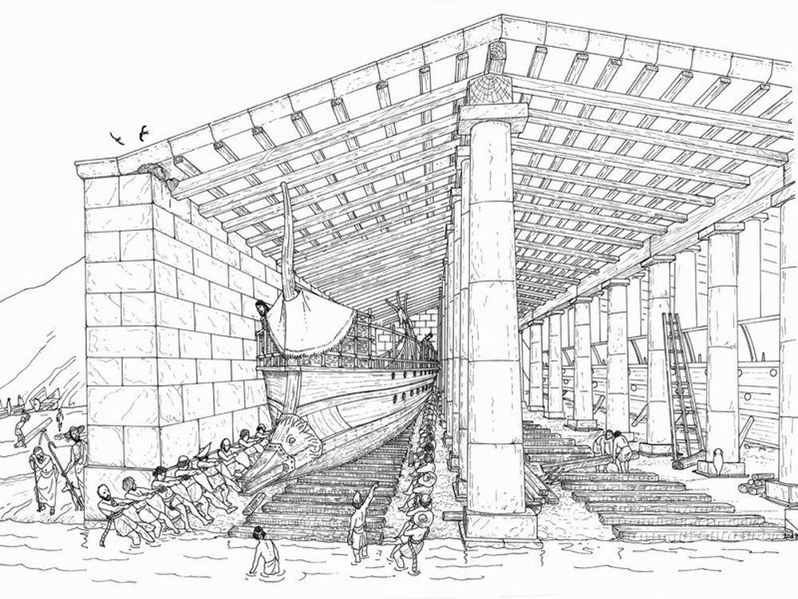
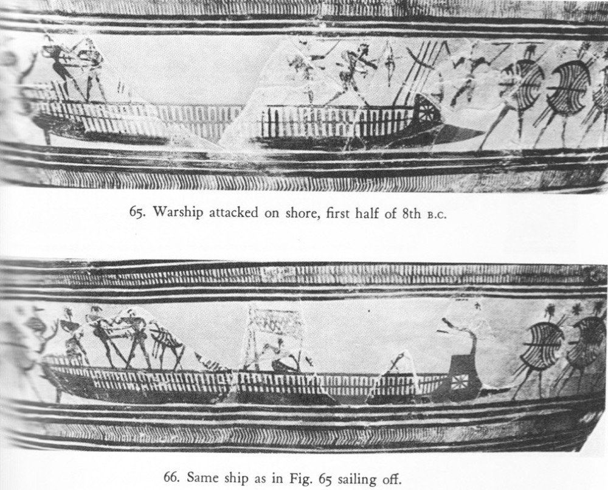
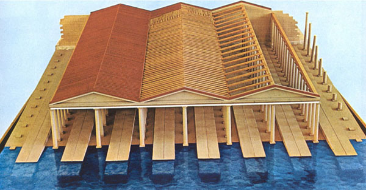
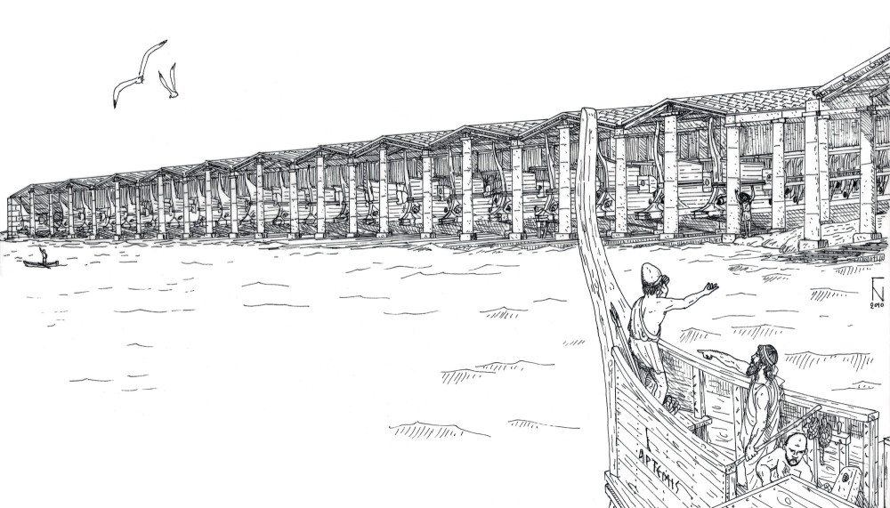
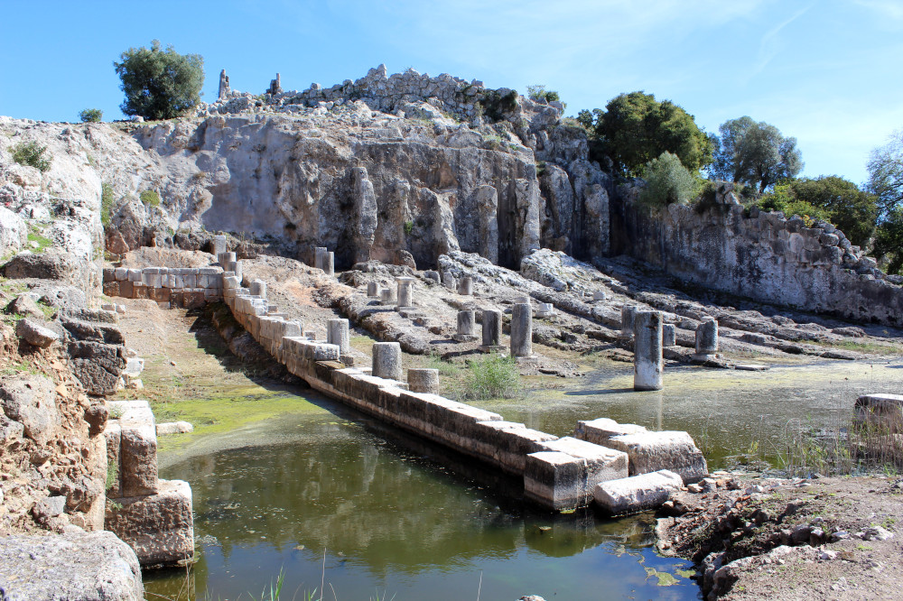

В предыдущих наших постах при обсуждения отдельных сторон движения корабля несколько раз возникал вопрос о том, как моряки прошлых эпох производили уход за подводной частью корпуса. Высказывались сомнения в том, что возможно было регулярно силами экипажа вытаскивать для этой цели суда на берег. Было непонимание механизма кренгования и килевания судов на плаву. Помимо этого, мы совсем не раскрыли, какие материалы и инструменты использовались для смазки подводной части галер с целью снижения показателя шероховатости корпуса. Есть еще много других подобных вопросов, связанных с этой темой (борьба с обрастанием корпуса, пагубное влияние морских червей и борьба с червоядием, обжиг и чистка подводной части и много других), освещение которых назрело. Поэтому выделим время и рассмотрим все это обстоятельно и подробно.

Афинский военный корабль в крытом эллинге, Пирей. (художник Г.Накас)
До того, как широкое распространение получили доки, сухие и плавучие, существовали принципиально два способа проведения обработки подводной части корпуса судна: один – вытащить корабль на берег и там спокойно работать с его подводной частью. Второй – накренить корабль, находящийся в воде, до такой степени, чтобы появился доступ к подводной части корпуса с одного из бортов. Оба способа имели свои плюсы и минусы и свои опасности, которых не всегда удавалось избежать.
Начнем с самого старого и проверенного способа, при котором требующее обработки или ремонта судно вытаскивали на сушу.
Естественно, первые такие операции мы встречаем в акватории Средиземного моря. Особенность этого бассейна – относительно небольшие приливо-отливные явления, что сильно ограничивало естественный способ перевода судна с моря на берег: выйти на удобное место и дождаться, когда вода уйдет вместе с отливом. Поэтому приходилось прибегать к другим способам.
Самым естественным из них было разогнать судно до максимальной скорости и, используя инерцию движения, «с разгона» выскочить на отлогий берег. Конечно, в этом случае повышенные требования предъявлялись к прочности плавсредства: удар-то по носовой части корабля мог быть нешуточным. Тем не менее к этому способу прибегали еще древние греки в эпоху Гомера.
Острова было нельзя различить нам глазами во мраке.
Также не видели мы и высоких, на берег бегущих
Волн до поры, как суда наши прочные врезались в сушу.
К суше пристав, на судах паруса мы немедля спустили…
Гомер, Одиссея, 9.146–49. (пер. Вересаева)
Гомер в последующих стихах дает ясное представление, насколько далеко удавалось завести корабль на берег таким способом:
Зная то место, к нему подошли мореходцы; корабль их
Целой почти половиною на берег вспрянул — так быстро
Мчался он, веслами сильных гребцов понуждаемый к бегу.
(пер. Жуковского)
Все наперед это знавши, в залив они въехали. Быстро
До половины взбежал на сушу корабль их с разбега:
Руки могучих гребцов корабль этот веслами гнали.
(пер. Вересаева)
Гомер, Одиссея, 13.113–15
По этой причине, значительная часть батальных сцен, изображение которых мы встречаем на вазах того периода, происходит как раз на носовых частях кораблей, вытащенных на берег наполовину. Т.е. попали они туда как раз «с разбегу».

Более подробно об этих триерах говорилось в постах, посвященных Гомеровским кораблям
Если мы приглядимся к носовой оконечности на этих «галерах», то можем прийти к заключению, что она спроектирована не столько для нанесения таранных ударов, сколько для облегчения выхода корпуса галеры на прибрежную полосу из песка или гальки. Подход к берегу носом, а не кормой, характерен именно для отмеченных случаев. Стандартным, как мы знаем, оставалось причаливание галеры к берегу именно кормой. Это повелось еще со времен Илиады:
И кровью земля заструилась.
Гектор же, раз ухватясь за корабль, не пускал его, крепко
За украшенье держа кормовое. Кричал он троянцам:
"Дайте огня и крик боевой испустите все вместе!
Зевс дает нам день, - отплату за все! Суждено нам
Взять корабли, против воли богов к нам приплывшие в Трою,
Столько принесшие бед из-за трусости наших старейшин!
Я пред кормами судов собирался сражаться, они же
И самого не пустили меня, и народ удержали.
Если, однако, в те дни нам широко гремящий Кронион
Ум повредил, то сегодня он сам и зовет и ведет нас!"
Iliad, 15. 716–22 пер.Вересаева
И об этом мы подробно рассказывали, когда говорили о гомеровских кораблях.
Одним из вариантов описанного способа перевода судна на берег является следующий: гребцы разгоняют триеру до максимальной скорости, после чего все быстро переходят на корму. Нос поднимается над водой, а это облегчает его всхождение на прибрежную полосу суши. Руль или рули при этом кладут на борт, и триера, поворачивая, оказывается на берегу в положении параллельно линии прибоя. Правда, в этом случае труднее спускать корабль на воду в случае экстренной необходимости, что ограничивало круг возможностей использования такого варианта. В данном варианте на борту могла оставаться только часть экипажа, остальные гребцы действовали на берегу, обеспечивая надлежащее положение триеры.
Вторым способом перевести корабль на берег является использование физической силы его экипажа: гребцы совместными усилиями переносят триеру на берег. Посмотрим, при каких условиях возможен такой вариант. Рассмотрим его для греческой триеры.
Предварительно скажем несколько слов о казалось бы лишнем здесь понятии боеготовности флота в античные времена. Корабли должны были во всеоружии встретить врага на морских подступах к городу даже при неожиданном появлении флота противника. Казалось бы отсюда логично, если боевые корабли будут находиться постоянно наплаву в родной гавани. Однако это ошибочный тезис. Дело в том, что подводные части судов в водах Средиземного моря страдали от морских червей, которые буквально буравили доски обшивки в бесчисленном множестве точек. Корабль, поврежденный червями, быстро впитывал воду, становился тяжелым и маломаневренным, фактически непригодным к бою. Чтобы избежать этой беды, корабли военного флота ждали противника в специальных крытых эллингах на берегу, где они просыхали от предшествующих морских походов.

Реконструкция крытых эллингов в Зеа (Пирей, Афины, Морской музей)
Существует даже теория, что триеры вытаскивали на берег для просушки каждую ночь.

Общий вид крытых эллингов в Зеа. Реконструкция художника Г.Накаса.
Мы ниже подробнее опишем все связанные с этим детали, а сейчас лишь отметим, что развалины таких эллингов дожили до наших времен.

Изучая их, можно с большой достоверностью оценить размеры кораблей, для которых они были предназначены (обсуждение этого вопроса мы дадим в отдельной части). Получается, что максимальная длина триеры была 35-36,5 м, а максимальна ширина 3-3,7 м. Знание этих размерений не позволяет, увы, с точностью определить водоизмещение триер. В зависимости от принимаемых гипотез о полноте обводов подводной части корпуса различные исследователи приходили к заключению о водоизмещении греческой триеры IV века до н.э. в диапазоне от 36 до 110 тонн. При этом доводы в пользу того или иного варианта были весьма умозрительны и не дают возможности их проверки. А из дошедших до нас материальных остатков античных греческих триер известен едва ли не единственный бронзовый таран из Атлита, да и то в его отношении высказывались сомнения, был ли он частью триеры.
Конечно, можно было не поднимать все судно, а лишь приподнимать его часть, а оставшуюся волочить по песку, что давало бы возможность вытаскивать на берег корабли весом до 45 тонн. Но тогда возникает другая проблема. Смоляная обмазка триер после такой транспортировки полностью сдиралась и корпус необходимо было бы обрабатывать вновь. А это непростая, трудоемкая операция. Кроме того встает вопрос о прочности набора корпуса, который мог бы выдержать концентрацию сил в точках их приложения при подъеме корабля в воздух. Иными словами, не останутся ли отдельные детали в руках гребцов, учитывая, какие силы при этом действуют.
Исследования специалистов по физиологии человека показывают, что средний работник весом в70 кг способен нести на своих плечах груз максимальным весом 90 кг. В случае, когда груз несут несколько человек, или действуют они в неудобной позе, цифра существенно уменьшается – до 45-70 кг на одного человека.
Если предположить, что хорошо тренированный экипаж триеры способен действовать синхронно (а к такой работе они приучены в процессе гребли) и выдерживать нагрузку до 90 кг на человека, то в этом случае он сможет вынести на берег триеру максимальным весом 18 тонн, что означает подъем корабля водоизмещением (с учетом веса экипажа из 200 человек) 32 тонны.
В этой связи интересно вспомнить отрывок из работы известного ученого Элвина Тоффлера «Третья волна» (1980) о синхронизации усилий работающих людей.
Даже в древнейших обществах труд был тщательно организован во времени. Воины-охотники обычно работали вместе, чтобы поймать свою жертву. Рыболовы согласовывали свои усилия при гребле или вытаскивании сети. Много лет назад Джордж Томсон показал, каким образом различные трудовые потребности отражаются в народных песнях. Для гребца время маркировалось простым звукосочетанием из двух слогов, чем-то вроде "О-оп!". Второй слог указывает на момент максимального усилия, а первый был связан с подготовительным этапом. Он отмечал, что вытаскивать лодку тяжелее, чем грести, "а потому моменты напряженных усилий занимают большие интервалы времени", и, как мы видим в ирландском крике "Хо-ли-хо-хуп!", сопровождающем вытаскивание лодки, связаны с более длительным приготовлением к последнему усилию (Или у нас «Раз-два-взяли!» - g._g.))." До тех пор пока Вторая волна не ввела машинное производство и не смолкли песни рабочих, такого рода синхронизация усилий была в целом органичной и естественной.
Элвин Тоффлер, Третья волна. Пер. Бурмистров К.
О привычности матросов к скоординированным, синхронизированным действиям говорит и наша народная мудрость. Мы уже как-то упоминали фразу из Владимира Даля:
«У нас ночью корову со двора увели, верно матросы!» – «Кабы матросы, так бы услышали: они бы трёкали!»
Конечно, напрашивается вопрос об использовании в этом процессе катков или воротов. Но если речь идет о песчаном береге, то катки там вряд ли будут эффективны, да и ось ворота или шпиля в такой почве тоже надежно закрепить не удастся. Также не находит подтверждение версия о том, что для облегчения судна каждый раз, когда его отправляли на берег, из него предварительно выгружали балласт. Если учесть, что на берег корабли могли для сушки вытаскивать каждую ночь, то ни о какой боеготовности триер с выгруженным балластом не могло быть и речи. К тому же, некоторые писатели вообще сомневаются, что на триерах был балласт.
Продолжение последует.